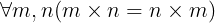
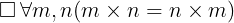

introduction : 2
draft0.1
Rejection of the distinction between necessary and contingent truths is so profoundly at odds with our inherited account of reasoning that it is often dismissed out of hand before being seriously considered. In order to make it reasonable to consider this view further, some immediate objections must first be dealt with.
The influence of Quine's attack on the analytic-synthetic distinction was so far-reaching that it even played a role in attempts to reshape the norms of modern academic philosophy. Somewhat surprisingly, it was used to license the development of experimental philosophy. This movement was best known for its members' attempts to gain empirical evidence to decide philosophers' claims concerning ordinary usage, folk-theories, pre-theoretical intuitions, which statements were intuitively obvious and which were held true by all competent speakers. In this way, they challenged traditional philosophical norms governing dispute resolution.
Such developments notwithstanding, it is still contrary to current norms of academic philosophy for philosophical experts to attempt to resolve a dispute in their field by appealing to the popularity of their position or the consensus among their peers. However, though philosophical disputes among experts ought not be settled on such grounds, it is often reasonable to be guided by expert opinion. Particularly when starting to explore an unfamiliar issue or position, the consensus of experts can provide a reasonable guide for assessing whether serious inquiry is worthwhile and, if so, how it may be most fruitfully pursued. And if, having thought about the matter and formed one's own opinions on the basis (among other things) of the other reasons those experts gave to support their claims, one is at odds with the expert consensus, intellectual humility calls for further serious reflection: someone seeking to hold true beliefs should re-consider whether the experts are right.
In regard to human cognitive abilities, the consensus among expert
Anglo-European philosophers has long been that some statements are necessarily
true and we can know them to be so. That the statements
2 + 2 = 4
, All vertebrates are animals
and The sum of the
internal angles of any (Euclidean) triangle is of equal magnitude to the sum of
two right angles,
are necessarily true; that we can be justified in believing
such statements with absolute certainty; that our justification for doing so is
inextricably connected with our capacity to discern that such statements are
necessarily true; and that our capacity to discern necessary truths is
inextricably connected with our capacity to reason. These are not marginal
assumptions but foundational commitments of the Analytic, Kantian, and
Scholastic traditions. Commitments shared by, and inherited from, both Platonic
and Aristotelian accounts of knowledge and reasoning. Indeed, to describe these
claims as merely consensus views among expert philosophers is a considerable
understatement.
At first glance, rejecting these commitments appears to involve an implausibly pessimistic view of philosophical history. Certainly, modal skepticism bears a particularly heavy burden of explaining how, if it is mistaken, the diagnosis of our statements as necessary and contingent arose and why it has proven so enduring; but if modal scepticism required us to regard much of modern Anglo-European philosophy as misguided that would be a significant reason for rejecting modal skepticism. However, modal skepticism can offer one of the most optimistic accounts of the history of modern philosophy.
To begin with, it should be borne in mind that each three fundamental alternatives
described in part 1 involve some fairly serious and widespread error. Both Kant
and Russell (together with many of their followers) had proclaimed themselves to
be on the brink of discoveries that would put philosophy on the secure road of
a science
and that expectation has not been fulfilled. (It should be noted
that this is not quite the plain example of science envy it appears to be. By
both the standards that Kant and Russell sought to fulfill, logic counted as a
science, and they aspired to achieve the same security as the products of pure
logical deduction; not merely results as dubious as those of empirical
enquiry.) In any case, this achievement has not come to pass.
Seen from a broad enough outlook it is the modern (at least comparative)
disinterest in the question of how we have knowledge of necessary truths that.
Though, of course, investigation into this question continues (though not
* Indeed to expect such progress is now derided as naive
If the first alternative is correct, and naturalism is false, then the problem
at the centre of Anglo-European philosophy's dominant movements for the last
four hundred years has been a delusion. Modern philosophers' attempts to
explain how we can be both reasoning beings and creatures whose observable
actions conform necessarily to natural law
†kant1787-critiqueOfPureReason.pluharTrans
will turn out to have been as quixotic as alchemists' attempts to explain how to
transmute lead into gold. Dazzled by scientific successes many modern
philosophers will have been drawn into falsely believing that explanations of
our capacity to reason must fit within scientific constraints; and it is only
once they free themselves from such scientism
that genuine progress in
understanding the human capacity to reason will be made.
If, the second alternative is correct then the length of time that the dominant movements of modern Anglo-European philosophy have been bent upon pursuing dead-ends may be less. If Analytic philosophers were mistaken in insisting that the only way in which naturalism could be reconciled with our capacity to distinguish necessary truths was if all necessary truths were analytic, then it is only for the last hundred years or so that the dominant movement of Anglo-European philosophy has been barking up the wrong tree.
The alternative that is compatible with the most optimistic assessment of modern philosophy's progress on this central issue, is of course Analytic philosophers turning out to be right. If a naturalistic account of our capacity to distinguish analytic truths could be given, and all and only such truths were necessary analytic truths could be distinguished, If a naturalistic account of our capacity to distinguish
justification of necessary truths could be provided on roughly Analytic lines.
And such analyticity also guaranteed
most optimistic assessment of modern philosophy's progress is compatible will of course be if Analytic philosophers were right all along, all necessary truths are analytic, and whatever it is we learn in the natural process of learning a language justifies our belief that those truths are necessary
it would only be some critics of Analytic
philosophy who had been mistaken and it would only be in temporarily doubting
that all necessary truths were analytic, or that analytic truths could be
distinguished on principled empirical grounds, that Anglo-European philosophy
had gone into a cul-de-sac
and then only for the last few decades.
At first glance, the third alternative may appear to require as negative
There are only two less dismal . If the second al
There is one alternative left. At first glance it may seem to involve
If it were only a question of providing foundations for philosophy, the conflict between our scientific theories and our understanding of ourselves as reasoning beings might be resolved (as popular scientists such as Neil deGrasse Tyson, Lawrence Krauss and Stephen Hawking have suggested) by simply dismissing philosophy as a source of knowledge altogether. However, the lack of foundations for philosophy is only one aspect of the more general problem. The lack of an account of reasoning compatible with our scientific theories is particularly salient in philosophy because, at least until recently in the Anglo-European tradition, philosophy was thought of as a field in which knowledge was pursued by reason alone (i.e. unaided by the senses†Except, perhaps, for the initial acquisition of the relevant concepts as per the traditional view described above ). However, even if that demarcation of philosophy is useful, reason is not the exclusive prerogative of philosophers. People exercise their capacity to reason in other fields and daily life, and their capacity to do so is no less puzzling (and perhaps considerably more productive of knowledge) than that of philosophers†Indeed one of the puzzles concerning our ability to reason is how reasoning could be so successful in producing knowledge in fields such as mathematics, science and ordinary life and yet so unproductive of knowledge in philosophy..
In particular, as many philosophers have noted, scientific theories themselves rely upon reasoning for their justification. The relationship between science and philosophy is not like that between modern chemistry and alchemy. Medieval alchemists may have possessed some knowledge of chemical properties and reactions buried amongst their superstitions and esoteric theories, but alchemy has been altogether superseded by chemistry. The methods and principles of alchemy have been either rejected or justified by means entirely within the field of chemistry, leaving no residual core of alchemical principles which modern chemistry relies upon but cannot justify. By contrast, modern science appears to be unavoidably reliant upon necessary principles in which belief is justified by much the same means as those by which ancient philosophers justified their beliefs in the truths of geometry. Not only do scientific theories contain mathematical claims, but the relationship between scientific theories and the evidence that supports them appears to involve necessary truths that are not themselves known through scientific investigation. Whether a scientific principle or theory is supported by a given range of evidence seems, ultimately, to be a necessary truth that is not itself discoverable by empirical scientific investigation (though scientific investigation may reveal whether that evidence happens to exist). In both these ways, our knowledge of necessary truths appears to remain indispensable to the justification of scientific theories and yet apparently unjustifiable by scientific methods.
A conclusion some philosophers have drawn from the apparent dependence of
science upon unscientific knowledge of valid inferences and necessary truths, is
that science can never undermine reason as a source of knowledge of necessary
truths without undermining itself. If, on their view, no being capable of
discerning necessary truths can be constructed from the materials postulated in
our best scientific theories, then that only shows that the scientific image of
the world is partial (and perhaps some aspects of reality are beyond the reach
of scientific discovery altogether). Indeed some philosophers who are attracted
to this line of reasoning have dubbed the view that no aspect of reality is
beyond scientific discovery Scientism
, and decry such Scientism as one
of the great intellectual errors of the current age (see external link).
It is easy to see why this line of reasoning might appeal to philosophers. It neatly defends the continued relevance and value of philosophical enquiries to successful knowledge production in the sciences and tacitly establishes philosophy as the queen of the sciences. Attributing to it the responsibility of establishing necessary principles upon which scientific theories depend. However, the claim that science is partial leaves the conflict between our scientific understanding of the world and our understanding of ourselves as reasoning beings unresolved; for it does not explain how our capacity to gain knowledge of necessary truths can affect aspects of reality (such as our bodily movements) of which knowledge can be gained by scientific means and yet remain beyond scientific discovery itself. Worse yet, the conclusion that if scientific theories are incompatible with our having the capacity to gain knowledge of necessary truths then we could not know those theories to be true is only reached by taking key elements of the traditional account of knowledge and reasoning for granted.
Many, perhaps all, scientific theories contain mathematical and logical truths†Statements that are true under all interpretations of their non-logical or non-mathematical terms. Statements which, at least by the lights of the traditional account of knowledge and reasoning, are true necessarily. Furthermore, those mathematical and logical statements are often indispensable to those theories. No alternative theory that does not contain those statements (or translations of them) captures the same observable predictions as consequences. In this sense it is true that scientific theories are dependent on putative necessary truths.
By and large, however, scientific theories do not contain ascriptions of necessity (or possibility). Theories such as such as Newtonian mechanics, general relativity and atomic theory, for instance, contain statements asserting that multiplication is commutative; but they do not contain statements asserting that multiplication is necessarily commutative. Scientific theories contain statements that may be rendered into the clear notation of modal logic as:

but they do not contain explicit ascriptions of necessity such as:

Furthermore, there is a prima facie plausible explanation for this lack. Scientific theories are in the business of explaining, or at least predicting, our observations. Although the details are still disputed, it is the success of scientific theories in predicting our observations that justifies belief in the statements they contain. (Though this is not to assume we could not be justified in believing some of those statements on other grounds.) What happens in other possible worlds, to borrow the language of modal realists such as David Lewis, is irrelevant to our observations in this real world. For the purpose of predicting our observations it matters not one whit whether multiplication is commutative in other possible worlds so long as it is commutative in this world. (Nor does it matter if the rules of inference relied upon to delineate the statements contained in a scientific theory preserve truth in other worlds so long as they do in this one.)
This is not to say that scientific theories cannot include modal ascriptions.
That ascriptions of modality are somehow incoherent, unclear or otherwise
unsuited to limning the true and ultimate structure of reality
†quine1960-wordAndObject.
If what was true in other possible worlds somehow influenced what we observed in
this real world (perhaps via people's capacity to reason and thence their
actions) then a true explanation of our observations would have to include
ascriptions of possibility and necessity, and if that were the best available
explanation of our observations then we would be justified in believing it†It may be objected that possible worlds cannot influence each other by definition. That if parallel universes influence events in this one then they are not other possible worlds but only some further part of this possible world and the sort of modality they would warrant introducing into our scientific theories would not be the absolute modality of possibility and necessity. I have nothing to gainsay this objection, except to note that it only strengthens the claim currently being defended; viz., that the observations which justify belief in scientific theories concerning natural phenomena do not justify beliefs in modal ascriptions..
Indeed there are occasional, somewhat fevered, suggestions that such influences
occur in quantum mechanics. If evidence of such influences were discovered, the
use of modal operators in scientific theories might well be justified. Thus far,
however, no such influences from other possible worlds have been detected and no
modern scientific explanations of our observations contain such ascriptions†In recent times philosophers have paid great attention to putative a posteriori necessities, such as Water is necessarily H2O
. However, the necessity of such statements hinges upon ways in which affairs in one world w0 affect which other possible worlds statements made in w0 are true of. If such ascriptions of necessity are justified at all, it is as elements of explanations of our linguistic and cognitive capacities, and not as explanations of the observations upon which our theories of chemistry are founded. See a_posteriori_necessities*..
If (1) scientific theories contained ascriptions of necessity, (2) all the materials postulated in scientific theories were insensitive to modal properties and relationships, and (3) no reasoning creature capable of knowing ascriptions of necessity to be true could be composed of purely modally insensitive materials; then it would follow that if our scientific theories were not partial (i.e. there were not elements of reality, and more particularly elements of the creatures who believed these theories, of a kind other than those postulated in our scientific theories and governed by laws other than those our scientific theories claim govern other natural phenomena) then we could not know those theories to be true. In this sense the claim that no aspect of reality was beyond scientific discovery would be pragmatically self-defeating; for we could not know those theories if they were false, and if they were true then we could not know the ascriptions of necessity that they contained. However, our current best scientific theories do not contain such ascriptions, and it is only by taking it for granted that we know that some of the statements contained by scientific theories are necessarily true that the claim that science is total is made to appear pragmatically self-defeating.
Another way in which our knowledge of scientific theories might be thought to depend upon our knowledge of necessary truths is via their evidential support. Though, again, the details are still disputed, our belief in scientific theories is somehow justified by their success in predicting (and retrodicting) our observations. Our capacity to determine those theories observable predictions, may be thought to require us to have knowledge of necessary truths. As a modern adherent of the traditional account of knowledge and reasoning puts it:
In setting out to confirm an inductive hypothesis, we must be able to
recognize what its consequences would be. Ordinarily, to recognize these we
must apply deduction; we take the hypothesis along with other things that we
know and we see what is then implied. All of this, it would seem, involves
apprehension of truths of reason
These truths pertain to certain abstract or eternal objects--things such as
properties, numbers, and propositions or states of affairs, things that
would exist even if there weren't any contingent things such as persons and
physical objects.
(R. Chisholm, _Truths of Reason_, 1987)
If our capacity to determine the observable consequences of scientific theories were dependent upon our capacity to distinguish arguments that necessarily preserved truth; then, again, the claim that science was total (and hence the principles which, according to our best scientific theories, govern the rest of the natural world also govern our behaviour and the formation of our beliefs) would be pragmatically self-defeating. If our scientific theories were true then we could not know them to be so. But again, this is merely a particularly partisan way of saying that if our scientific theories preclude sensitivity to modal properties and relationships then they are incompatible with theories of knowledge, such as the traditional account of knowledge and reasoning, according to which such sensitivity is required for knowledge.
The reason these arguments are so widely taken as establishing that the
(non-modal) principles which, according to our best scientific theories, govern
the rest of the natural world, do not govern our actions and the formation of
our beliefs, is that elements of the traditional account of knowledge are
still deeply embedded in our†or at least the Anglo-European common understanding of ourselves. The
Aristotelian principle that in the best and most certain form of knowledge
(epistêmê - the sort of knowledge we have of geometry, logic and mathematics)
we are aware of the thing known that it is not possible for [it] to be
otherwise
†aristotle-completeWorks.oxfordRevisedTrans, Posterior Analytics Book 1 Section 2 and that all our other knowledge is dependent on our
possession of this best form of knowledge, remains so fundamental
to folk epistemology that any questioning of this principle is easily taken as
tantamount to skepticism.
Our knowledge of scientific theories is no doubt dependent upon our ability to reason (including, among other things, the ability to infer the logical consequences of a theory from its axioms) but it is not dependent upon the truth of any one particular explanation of that ability. In particular it is not dependent upon the truth of the traditional account of knowledge and reasoning. The conflict between our scientific theories and that account of knowledge and reasoning does not imply that we do not know those theories, but only that either we do not know those theories or the traditional account of knowledge and reasoning is wrong.
Attentive readers may have wondered at the caveat in the claim of the last section that by and large scientific theories do not contain ascriptions of necessity. The reason for this reservation is that on the view advocated here, the traditional account of reasoning is itself, if not a scientific theory†The most commonly given reason for denying that the traditional account of knowledge and reasoning is best understood as an scientific theory is that it is inextricably bound up with normative judgements. Of course, normative judgements may be made about the states postulated in explanatory theories. Belief-desire psychology is an explanatory theory concerning psychological states which gains credence from its success in predicting people's actions, but for all that some desires may be held to be improper. But in the case of theories of knowledge it is often claimed that there is a closer connection to normative judgements., at least like a scientific theory in being a theory in which belief is justified by its success in predicting and explaining our observations.
The chief purpose of this work is to argue that the traditional account of knowledge and reasoning is simply a false explanation of our capacity to reason, and, in particular, the claim that there are two types of truths, necessary and contingent, is simply a further false element of this explanation. (Much as the distinction between phlogistinated and dephlogistinated materials is part of a false explanation of combustion.) Against a background of changing and unpredictable circumstances, the salient success of geometrical proofs in reliably producing apparently true beliefs concerning the measurable spatial properties and relationships of physical objects, prompted ancient Greek philosophers to attempt to explain their success. The hypothesis that the truths revealed to us by this method are necessarily true, and that we have an innate capacity to distinguish at least some such truths, (and some patterns of inference that necessarily preserve truth) appeared to explain a range of phenomena. How we acquired such knowledge without empirical investigation. Why some truths could be known in this way but not others. Why the results of these methods were so much more reliable than beliefs justified by observation. Another factor contributing to the spread of this explanation amongst ancient Greek philosophers (and those influenced by them) was its consonance with the ancient Greek mystical view that the changing world we observe is a shadowy illusion, cast by an underlying and unchanging true reality. (A view that lingers on in the Christian belief that the bedrock of reality is a necessarily existing and unchanging God.)
Like the falsehood of the theory of perception upon which the traditional
account of knowledge and reasoning relied; the falsehood of the claim that there
are necessary and contingent truths (and unaided reason can only justify
knowledge of the former) does not imply that we do not have knowledge or cannot
reason, but only that the traditional account of knowledge and reasoning is
wrong. However, the traditional theory of perception involved claims concerning
the processes by which the properties of external objects were transmitted to our
minds via our sensory organs. Claims which were comparatively easily
refuted by empirical investigation of the physical processes involved
in perception. By contrast, the claim that we are are capable of distinguishing
necessary truths draws its chief support from its explanation of our
introspective awareness of our own thought processes. Its credibility is
largely due to the explanation it offers of the introspectively felt difference
between statements such as All widows have been married.
and All
widows are near the Earth.
. The immediacy of the introspective awareness of
a distinction between these two types of statement, and its direct connection to
the diagnosis of necessity/contingency gives this diagnosis an
unwarranted credibility. This has made this last lingering element of the
traditional account of knowledge and reasoning particularly resistant to
correction (see introspection_not_a_source_of_theoretical_knowledge).
However, while an alternative account of our capacity to reason does need to
explain what it is about these sentences that we are responding to, it does not
need to take the diagnosis of sensitivity to necessity/contingency at face
value, and questioning that diagnosis need not plunge us into skepticism.